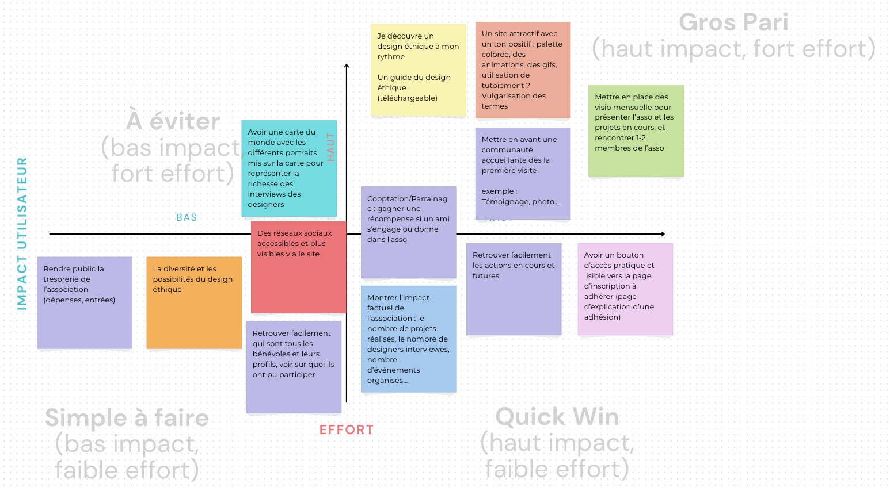
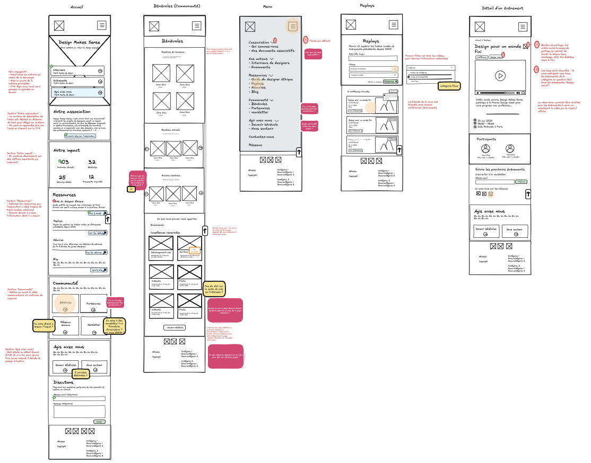
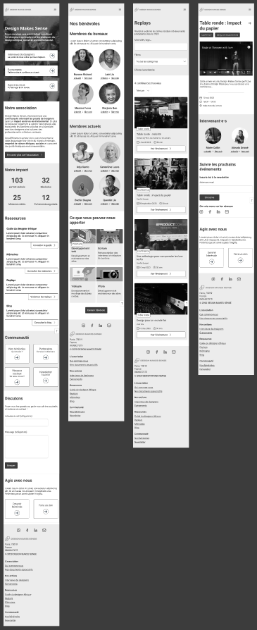
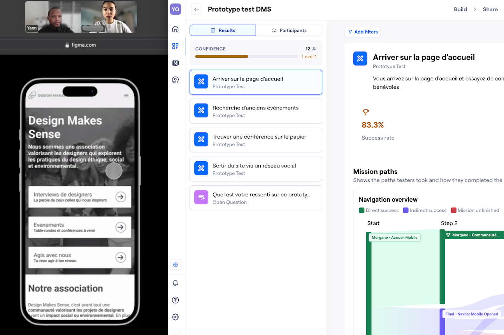

Design Makes Sense
Refonte de site web
Rôles
UX Researcher
UX UI Designer
Equipe projet
Léa Bridou
Morgane Boussert
Yannick Kabasele
Durée
6 semaines
(Juin 25 - Juillet 25)
Créée en 2018, Design Makes Sens est une association engagée dans la promotion d’un design éthique, social et environnemental.
Ses actions se déclinent sur trois grands axes :
- - l’organisation d’expositions, de tables rondes et de conférences
- - la réalisation d’interviews de designers
- - la mise en ligne de mémoires d’étudiants
L’association gère deux sites :
- - designmakessense.org, pour ses activités principales
- - editionsmakessense.org, pour l'edition de mémoires
Overview du projet
Situation
L’association Design Makes Sense nous a donné carte blanche pour refondre leur plateforme et en faire un site plus engageant et impactant pour toucher un public plus large. et encourager les utilisateurs à y adhérer.
Les problèmes remontés :
Absence d’un parcours utilisateur pour les personnes souhaitant devenir bénévoles.
La cible idéale de l’association est différente de l’actuelle L’association aimerait toucher un public plus large et s’adresser à des néophytes en design, en utilisant comme point de rassemblement l’éthique plutôt que le design. Leur cible actuelle correspond plutôt à des designers déjà sensibilisés.
Confusion sur leur identitéL'association est souvent confondue avec un collectif de designers (elle est parfois sollicitée par erreur pour du travail en freelance).
Tâches
En tant que UX / UI Designers, nos missions étaient de :
Augmenter les adhésions et dons par la création d'un parcours utilisateur d’adhésion clair.
S’adresser à des néophytes En organisant la page d’accueil pour présenter efficacement l’association, ses missions et actions.
Créer un site engageant En listant les missions possibles, les besoins actuels en bénévolat et en permettant de retrouver facilement les événements à venir.
Avoir une identité claire et impactanteEn distinguant association et designers interviewé.
Actions
Application de la méthode UX en 6 étapes :
01 - Planification - Cadrage du projet - Persona cibles hypothétique - Benchmark d’autres sites web d’associations.
02 - Exploration - Entretiens utilisateurs (6 participants) - Analyse des verbatims avec un diagramme d’affinité - Persona définitifs - Parcours utilisateur
03 - Idéation - Atelier de co-conception sur Figjam - Analyse des résultats avec la matrice Impact / Effort - User story - User flow
04 - Génération - Zoning - Wireframe - Maquette HD - Prototype interactif sur Figma
05 - Evaluation - Tests utilisateurs synchrone avec Zoom - Tests utilisateurs asynchrone avec Maze - Analyse des informations (verbatims et heatmaps)
06 - Itération - Ajustements itératifs
Résultats
Évolution : Itérations basées sur les retours utilisateurs ayant permis d’optimiser l’interface et les fonctionnalités essentielles.
Et après : Le cadre de ce projet ne nous permettait de produire qu’une première itération mais il serait intéressant de tester les améliorations apportées et/ou de repartir en phase d’idéation afin de tester d’autres points clefs du site afin d’avoir un produit fini le plus adapté possible à ses utilisateurs.
Prototype :Consulter le prototype
Processus de réalisation
Planification
Nous avons commencé le projet par cette phase essentielle puisqu’elle permet de cadrer le projet.
Le contexte
Après le premier entretien avec la fondatrice de l’association, nous avons reformulé son brief puis mené des recherches préliminaires sur leur site web, réseaux sociaux, rapports d’activités, Google Analytics, etc., à l’aide de la méthode QQOQCP.
Enjeux et objectifs
Un brainstorming nous a permis de définir les enjeux principaux que nous avons divisés en sous-objectifs :
La problématique
En utilisant la méthode des 5 pourquoi, nous avons défini la problématique afin de garder ces enjeux et objectifs en fil rouge tout au long du projet.
Problématique principale
« Comment pouvons nous inspirer des néophytes intéressés par l’éthique à s’engager dans l’association afin d’augmenter le nombre d’actions réalisées et donc l’impact de Design Makes Sens »
Cibles hypothétiques
Nous avons ensuite défini les utilisateurs cibles avec leurs personas associés, enrichis par les UX Cards pour leur donner plus de profondeur et ainsi nous aider à comprendre leurs besoins et à entrer en empathie avec eux.
Un benchmark de plusieurs sites web d’associations existantes a été réalisé, afin d’observer comment elles avaient répondu aux objectifs et besoins identifiés.
Validation du cadrage
Enfin, un deuxième entretien avec la fondatrice de l’association a été organisé pour valider notre cadrage et nos premières pistes.
Outils
Notion
Figma
Canva
Méthode
QQOQCP
brainstorming
5 Pourquoi
Proto-persona
Benchmark UX
UX Cards
Exploration
Le cadre du projet étant validé et les hypothèses établies, il nous restait à les confronter à la réalité.
Entretiens utilisateurs
Nous avons mené des entretiens de 30 minutes sur Zoom, basés sur des questions ouvertes et explorant 3 thèmes liés au design éthique :
- leurs valeurs,
- les ressources,
- leur engagement associatif.
Ces entretiens nous ont permis de recueillir des verbatims que nous avons analysés à l’aide d’un diagramme d’affinités axé sur le comportement des utilisateurs (d’abord organisé par « Catégories » puis par « Motivations / Freins »)
ainsi que d’une échelle de répartition, afin de perfectionner nos personas cibles.
Les idées qui sont le plus ressorties :
Besoins de liens social et humain
L’aspect communautaire et l’interaction sociale sont ce qui ressort le plus. Les utilisateurs seraient plus intéressés à rejoindre une association si cela leur permettait de faire des rencontres, d’échanger et de communiquer avec des personnes partageant les mêmes valeurs qu’eux, en dehors des activités associatives.
Anne Onime, 25 ans
« Une association est pour moi une opportunité d’échanger, de communiquer »
Valeurs environnementales
Pour s’engager, les utilisateurs ont besoin de savoir que l’association qu’ils vont rejoindre partage les mêmes valeurs qu’eux en matière d’éthique et d’environnement.
Carla Ka, 32 ans
« Si c’est vraiment des gens qui sont motivés, qui ont de vraies valeurs, oui, du coup, on s’engage pour ca, ca me motiverait à m’engager«
Réassurance
Avant de s’engager, les utilisateurs ont besoin d’être rassurés quant à l’association, ses actions concrètes, ses activités, ses membres, etc.
John Do, 28 ans
« Je voudrais plus en apprendre du coup ca me donnerait confiance et ca me donnerait envie de me lancer dans un projet »
Sources d’inspiration et informations
Les utilisateurs seraient intéressés par une association qui leur apporterait des informations et des sources d’inspiration quant au design social.
Jenna Da, 21 ans
« Donc globalement les maigres connaissances que j’ai aujourd’hui sur le design social viennent de conversations ultra intéressantes que je fais avec des designers »
2 profils d'utilisateurs
Les insights ont mis en évidence deux profils distincts :
01. Le néophyte
- - Étudiant
- - Non engagé dans une association
- - En quête d’information
- - En quête de réassurance
02. L'expert
- - Salarié
- - Engagé dans une association
- - Trés informé
- - Réassuré
Pour la suite du projet, nous avons choisi de nous concentrer sur Lucas, notre persona primaire, correspondant le plus au désir de changement de cible de l’association.
Parcours utilisateurs
Nous avons donc placé Lucas, persona primaire, dans un parcours utilisateur afin de comprendre ses motivations, identifier les points de friction rencontrés dans sa recherche d’association et révéler des opportunités de conception.
Outils
Zoom
Notion
Miro
Canva
Méthode
Guide d’entretien
Entretien
Diagramme d'affinités
Echelle de répartitions
Persona
Mindmap
Parcours utilisateur
Ideation
Dans cette étape, nous avons organisé un atelier d’idéation pour trouver un maximum de solutions aux problèmes identifiés.
Atelier de co-conception
Nous avons réalisé un atelier de co-conception sur FigJam avec 6 participants, afin de stimuler l’intelligence collective et générer des idées de conception.
L’atelier a combiné :
- une phase de divergence (méthode des Chapeaux de Bono, exploration d’un large éventail d’idées),
- une phase de convergence (sélection des concepts les plus pertinents via un vote par gommettocratie).
Les retours des utilisateurs ont révélé des points clés :
Un besoin d’accompagnement dans la découverte du design éthique
Une attente forte de visibilité sur l’impact concret de l’association
Un manque de clarté sur les missions de l’association
Un site attractif avec un ton positife
Nous avons ensuite trié les verbatims en fonction de leur pertinence grâce à la matrice impact / effort.
Scénario utilisateur
Ces résultats ont permis de structurer le scénario utilisateur et le user flow du projet :
Scénario utilisateur
« À la fin d’une journée de travail en librairie, sur son téléphone, Lucas, néophyte en design, cherche activement une alternative ou une solution à la destruction des livres invendus. Il souhaite trouver une communauté qui partage ses valeurs et lui permette d’agir. Le succès sera atteint s’il se sent soutenu, obtient les informations qu’il recherche et décide de suivre l’association sur un réseau social. »
Outils
Notion
Figma
Canva
Méthode
Atelier d'idéation
Chapeau de Bono
Gommettocratie
Matrice impact/effort
User scenario
User flow
Génération
En nous basant sur les données recueillies, nous avons commencé à réfléchir à un prototype.
Nous avons repris l’user flow créé lors de l’étape précédente pour visualiser le cheminement de notre persona primaire. Puis nous avons défini un zoning afin d’anticiper les zones d’impact lors de ce parcours utilisateur, avec Excalidraw.
Nous avons poursuivi avec un premier wireframe basse définition pour placer tous les éléments essentiels (sans recherche formelle à ce stade), toujours avec Excalidraw.

Ensuite, nous avons conçu une maquette haute définition, plus aboutie dans sa structure, sous Figma en design system (utilisation de design tokens et d’atomic design).

Enfin, nous avons produit le prototype interactif, testable par les utilisateurs.
Outils
Notion
Figma
Excalidraw
Méthode
Zoning
Crazy-8
Wireframe
Atomic design / Design system
Composants / Variants
Maquette HD
Prototype
Evaluation
Nous sommes passés en phase de test afin de vérifier que notre interface répondait bien aux besoins utilisateurs identifiés.
Deux types de tests ont été menés :
- Un test synchrone en visio, un par un, pour recueillir des données qualitatives (verbatims),
- Un test asynchrone sur Maze avec 12 participants, pour collecter des données quantitatives (heatmaps et quelques verbatims) via des tâches ciblées.

Après analyse des résultats, nous avons formulé des recommandations pour les futures itérations.
Elles ont été priorisées sur une matrice impact / effort, et les plus urgentes seront traitées dans la prochaine étape.
Outils
Figma
Maze
Notion
Méthode
Protocole de tests
Tests utilisateurs synchrones
Tests utilisateurs asynchrones
Itération
À partir des retours utilisateurs observés lors des tests et des recommandations générées, nous avons apporté des modifications pour améliorer le produit.
Nous avons traité les recommandations les plus urgentes et réalisé des benchmarks complémentaires pour enrichir les pistes d’amélioration, ce qui nous a permis d’optimiser le prototype et de renforcer la pertinence des solutions proposées.
Outils
Notion
Figma
Canva
Méthode
Benchmark
Créer un site engageant
En listant les missions possibles, les besoins actuels en bénévolat et en permettant de retrouver facilement les événements à venir.
Augmenter les adhésions et dons
par la création de parcours utilisateurs clairs.
S’adresser à des néophytes
En organisant la page d’accueil pour présenter efficacement l’association, ses missions et actions.
Avoir une identité claire et impactante
En distinguant association et designers interviewé.